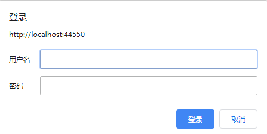

Spring Boot
服务启动后即关闭，没有错误日志
1
2
3
4
5
6
7public static void main(String[] args) {
try {
SpringApplication.run(TestBootstrap.class, args);
} catch (Exception e) {
log.error("error", e);
}
}服务部署启动
Spring Cloud Gateway
Invalid character ‘[‘ for QUERY_PARAM in “match[]”
1
java.lang.IllegalArgumentException: Invalid character '[' for QUERY_PARAM in "match[]"
Spring Cloud Gateway 与 Webflux 的兼容性的问题，项目的 Gateway 版本 2.0.0.RELEASE，去除
spring-boot-starter-webflux依赖解决可以升级 Gateway 版本。issuesunexpected message type: DefaultHttpRequest
1
io.netty.handler.codec.EncoderException: java.lang.IllegalStateException: unexpected message type: DefaultHttpRequest
Spring Cloud Gateway 以及 Spring Boot 版本 2.0.1.RELEASE 更新为 2.0.4.RELEASE。issues
Spring MVC
- Spring MVC 项目，请求返回 404
Spring Boot 使用惯了，接到 Spring MVC 的反而懵了，在 Controller 中定义好了接口，但是访问就 404。想到 Spring MVC 的 `org.springframework.web.servlet.DispatcherServlet`, 于是在 doDispatch() 方法中加上断点进行调试。发现 this.getHandler() 返回了 Null，即 HandlerMapping 为 Null。因为 Controller 中使用了 @RequestMapping 注解，而且项目是使用 XML 的配置方式，所以需要手动配置 RequestMappingHandlerMapping。(如果 Spring MVC 是旧版本也需要手动配置 HandlerAdapter，即对应的 RequestMappingHandlerAdapter)1
2
3
4<!-- 配置 HandlerMapping -->
<bean class="org.springframework.web.servlet.mvc.method.annotation.RequestMappingHandlerMapping" />
<!-- 配置 HandlerAdapter -->
<bean class="org.springframework.web.servlet.mvc.method.annotation.RequestMappingHandlerAdapter" />
Spring Cloud
- 配置中心，在项目启动时会从 Nacos 中拉取配置，但是在本地开发时，我们会在本地配置文件中配置一些配置项，此时就需要优先使用本地配置，避免被远程配置覆盖
解决办法：1
2
3
4
5# 需要配置在 Nacos 中
spring:
cloud:
config:
override-none: true
Nginx
upstream sent no valid HTTP/1.0 header while reading response header from upstream
Nginx 报错，然后设置了 Nginx 和业务服务配置
1
2
3
4
5
6
7
8
9
10
11proxy_http_version 1.1;
proxy_cache_bypass $http_upgrade;
proxy_set_header Upgrade $http_upgrade;
proxy_set_header Connection "";
proxy_set_header Host $host;
proxy_set_header X-Real-IP $remote_addr;
proxy_set_header X-Forwarded-For $proxy_add_x_forwarded_for;
proxy_set_header X-Forwarded-Proto $scheme;
proxy_set_header X-Forwarded-Host $host;
proxy_set_header X-Forwarded-Port $server_port;1
2
3
4
5
6server:
use-forward-headers: true
tomcat:
remote-ip-header: x-forwarded-for
protocol-header: x-forwarded-proto
port-header: X-Forwarded-Port然后依旧报错，此时把服务停止运行再次请求，然而正常访问，说明 Spring Gateway 和 Nginx 之间没有问题，便排查业务服务。
在 `HandlerInterceptorAdapter` 处理拦截器种发现了这么一段代码 `response.sendError`。此方法使用指定的状态码发送一个错误响应至客户端。服务器默认会创建一个 HTML 格式的服务错误页面作为响应结果，其中包含参数 msg 指定的文本信息，这个 HTML 页面的内容类型为
text/html，保留 cookies 和其他未修改的响应头信息。最后去掉此行代码，替换为抛出全局异常，得以解决。1
2
3
4
5public boolean preHandle(HttpServletRequest request, HttpServletResponse response, Object handler) throws Exception {
***
response.sendError(***);
***
}upstream server temporarily disabled while reading response header from upstream
no live upstreams while connecting to upstream
1
2
3
4
5
6upstream zxjl {
least_conn;
server 192.168.1.1:8765 max_fails=3 fail_timeout=30s;
server 192.168.1.2:8765 max_fails=3 fail_timeout=30s;
keepalive 256;
}max_fails 默认值为 1, fail_timeout 默认值为 10 秒。
fail 失败会返回:
- upstream timed out (110: Connection timed out) while reading response header from upstream
- connect() failed (111: Connection refused) while connecting to upstream
服务器
- Error: Network Error
请求时不时提示 net:ERR_CONNECTION_TIMED_OUT 以及 Error: Network Error。1
2# /etc/sysctl.conf
net.ipv4.tcp_tw_recycle = 0
MySQL
Slave_SQL_Running: No
因为设置主从同步时忘记排除 mysql 库，导致主从同步故障。
1
2
3
4slave stop;
# 跳过一个复制错误
set GLOBAL SQL_SLAVE_SKIP_COUNTER=1;
slave start;通过中间件 ProxySQL 连接数据库时，出现超时错误：
9001 - Max connect timeout reached while reaching hostgroup 30 after 10000ms1
2
3
4# 登录 proxysql 管理界面
mysql -h 0.0.0.0 -u radmin -P 6032 -p --prompt 'ProxySQL Admin> '
# 检查节点状态
select * from runtime_mysql_servers;ProxySQL 输出如下：
hostgroup_id hostname port gtid_port status weight compression max_connections max_replication_lag use_ssl max_latency_ms comment 30 192.168.0.3 3307 0 OFFLINE_HARD 1 0 1000 0 0 0 1
2
3
4
5
6# 重启 MySQL 服务
systemctl restart mysqld.service
# 登录 MySQL, 启动组复制
START GROUP_REPLICATION;
# 检查节点状态
SELECT * FROM performance_schema.replication_group_members;组复制异常
[ERROR] Slave SQL for channel 'group_replication_applier': Could not execute Delete_rows event on table ag_admin_v1.t_device_request; Can't find record in 't_device_request', Error_code: 1032; handler error HA_ERR_KEY_NOT_FOUND, Error_code: 1032[ERROR] Plugin group_replication reported: 'There was an error when connecting to the donor server. Please check that group_replication_recovery channel credentials and all MEMBER_HOST column values of performance_schema.replication_group_members table are correct and DNS resolvable.'[ERROR] Slave I/O for channel 'group_replication_recovery': Got fatal error 1236 from master when reading data from binary log: 'The slave is connecting using CHANGE MASTER TO MASTER_AUTO_POSITION = 1, but the master has purged binary logs containing GTIDs that the slave requires. Replicate the missing transactions from elsewhere, or provision a new slave from backup. Consider increasing the master's binary log expiration period. The GTID sets and the missing purged transactions are too long to print in this message. For more information, please see the master's error log or the manual for GTID_SUBTRACT.', Error_code: 1236[ERROR] Plugin group_replication reported: 'Maximum number of retries when trying to connect to a donor reached. Aborting group replication recovery.'[ERROR] Plugin group_replication reported: 'Fatal error during the Recovery process of Group Replication. The server will leave the group.'
组复制异常时如果不是由于数据不一致的问题：
1
2
3
4
5
6
7
8
9
10
11
12
13# 登录 MySQL 后执行
# 如果已自动启动则停止
STOP GROUP_REPLICATION;
# 清除二进制日志和 GTID 信息
RESET MASTER;
# 清除所有复制通道配置
RESET SLAVE ALL;
# 设置恢复通道用户和密码
CHANGE MASTER TO MASTER_USER = 'proxysql', MASTER_PASSWORD = '**' FOR CHANNEL 'group_replication_recovery';
# 使用主库的完整 GTID 集合, 查询主库：SHOW GLOBAL VARIABLES LIKE 'gtid_purged';
SET @@GLOBAL.gtid_purged = '103a0db1-c57a-11ec-936b-fa163e32f79d:1,1300ba13-c57a-11ec-8f10-fa163e9e68a7:1-6,3eda6e60-c578-11ec-a506-fa163eec93b8:1-12,bbbbbbbb-bbbb-cccc-dddd-eeeeeeeeeeee:1-79740623';
# 启动组复制
START GROUP_REPLICATION;1
2# 通过 GTID_SUBTRACT 计算缺失的 GTID：
SELECT GTID_SUBTRACT(' 主库_gtid_set', ' 从库_gtid_set') AS missing_gtids;数据不一致时，因为使用 mysqldump 导入太慢，而且服务器硬盘空间不够，也无法使用 xtrabackup，所以直接将 MySQL 正常库的 /var/lib/mysql 直接拷贝到故障数据库的 /var/lib/mysql
1
2
3
4
5
6
7
8
9
10
11
12# 停止故障库 MySQL 服务
systemctl stop mysqld.service
# 在主库传输整个文件夹到故障服务器。-a：归档模式（保留权限、时间戳等）-z：压缩传输
rsync -avz --partial --progress / 本地 / 文件夹 user@remote.server.com:/ 目标 / 路径 /
# 故障服务器删除故障节点的 auto.cnf
rm -f /var/lib/mysql/auto.cnf
# 故障服务器删除组复制元数据文件
rm -f /var/lib/mysql/group_replication.*
# 故障服务器删除中继日志（如有残留）
rm -f /var/lib/mysql/relay-log.*
# 故障服务器启动 MySQL
systemctl start mysqld.serviceMySQL 服务 CPU 占用高
1
2
3
4
5
6
7
8
9
10# 显示所有正在运行的线程
SHOW FULL PROCESSLIST;
# 按执行时间排序（重点关注 Time 列）
SELECT * FROM information_schema.processlist
WHERE COMMAND != 'Sleep'
ORDER BY TIME DESC;
# 查询 InnoDB 状态
SHOW ENGINE INNODB STATUS;先查询运行的进程，并没有发现耗时的 SQL 语句，所以查询了 InnoDB 的状态，发现有高频读取操作:
1
2
3
4
50 queries inside InnoDB, 0 queries in queue
28 read views open inside InnoDB
Process ID=7241, Main thread ID=140240127776512, state: sleeping
Number of rows inserted 30673026, updated 93414, deleted 50400, read 50681533524
7.18 inserts/s, 1.37 updates/s, 0.00 deletes/s, 1348292.44 reads/s每秒的读取操作非常高（1348292.44 reads/s），这可能是一个关键点。高读取可能意味着存在大量索引查找或全表扫描，但没有看到耗时的 SQL，可能这些查询执行得很快，但数量极大，导致 CPU 累积使用率高。
所以检查 innodb_buffer_pool_size 是否合理，确保缓冲池足够大（建议为物理内存的 70-80%）。1
SHOW VARIABLES LIKE 'innodb_buffer_pool_size';
返回
innodb_buffer_pool_size为 128MB，而服务器物理内存为 16GB。缓冲池过小会导致频繁的磁盘 I/O，数据无法缓存到内存，进而引发 CPU 负载升高，所以调整为物理内存的 70%~80%，修改后 CPU 占用率直接降低。1
2
3
4
5# 修改 my.cnf 配置文件
[mysqld]
innodb_buffer_pool_size = 12G
# 临时动态调整：
SET GLOBAL innodb_buffer_pool_size = 12884901888;还有一些配置暂未修改测试：
1
2
3
4
5
6
7
8
9# 禁用自适应哈希索引 AHI。（AHI 在高并发下可能导致热点索引争用，禁用后强制走 B+ 树，可能减少锁冲突。）
[mysqld]
innodb_adaptive_hash_index = 0
# 临时动态调整：
SET GLOBAL innodb_adaptive_hash_index = OFF;
# 调整 InnoDB 线程并发，建议值为 CPU 核心数 * 2。（限制并发线程数，减少资源争用。）
[mysqld]
innodb_thread_concurrency = 64由于没有启用慢查询日志，所以可以使用 Performance Schema 监控 高频 SQL，再根据情况对 SQL 检查执行计划
1
SELECT * FROM performance_schema.events_statements_summary_by_digest ORDER BY COUNT_STAR DESC LIMIT 10;
Redis
分布式锁的错误实现
听到同事说到业务加了 Redis 实现的分布式锁，但是没有偶尔没有生效，会重复添加两次数据。查看代码发现大致实现逻辑如下：1
2
3
4
5if (Boolean.TRUE.equals(redisTemplate.hasKey(key))) {
throw new BizException(" 请勿重复提交 ");
return;
}
redisTemplate.opsForValue().set(key, "1", 3, TimeUnit.SECONDS);可以使用 hasKey() 方法来检查 Redis 中是否存在指定的键。但是，在实现分布式锁时，使用 hasKey() 方法并不能保证原子性操作。
考虑以下情况：线程 A 和线程 B 同时调用 hasKey() 方法检查 Redis 是否存在锁键。假设两个线程都发现键不存在，然后都尝试设置锁键。这样就会导致多个线程同时获取到了锁，破坏了锁的互斥性。
为了保证原子性操作，需要使用 Redis 的原子性指令，如 setIfAbsent() 命令。该命令在键不存在时设置键的值，并且保证了原子性操作
Jackson
- missing type id property ‘@Clazz’ 在接收请求外部接口接收响应值时，报错： 报错信息在
1
Error while extracting response for type [*.**] and content type [application/json], feign.InvocationContext.decode(InvocationContext.java)
@RestControllerAdvice的全局拦截异常中的@EeceptionHandler({FeignException.class})方法中，于是打断点查看更详细的报错信息，报错为：问题是 Jackson 在反序列化时无法找到所需的类型标识属性。在无法修改外部请求代码的情况下时，只能修改本地代码，去除对应的反序列化配置1
Could not resolve subtype of [simple type, class *.**]: missing type id property '@Clazz'
1
2
3
4
5
6
7
8
public Jackson2ObjectMapperBuilderCustomizer json2ObjectMapperBuilderCustomizer() {
return builder -> builder.mixIn(IPage.class, IPageMixin.class);
}
interface IPageMixin {}
hibernate-validator
- 对于 @NotNull 的返回信息为：** 不能为 null
在 resources 下创建对应的配置文件，更改默认信息即可。参考：hibernate-validator
其他
项目前端请求的时候会弹出登录的弹框，接口响应 401，请求头中的
Authorization的值是以Basic开头
项目使用 JWT 鉴权，在请求头中使用
Authorization传递 Token，值应该以Bearer开头。想到 Swagger 的鉴权是使用Basic，所以这块应该是携带了 Swagger 的请求头。所以需要清除 Swagger 的用户名和密码，在 Chrome 中，我们只要在 URL 前面加上user@即可强制浏览器刷新它的缓存。